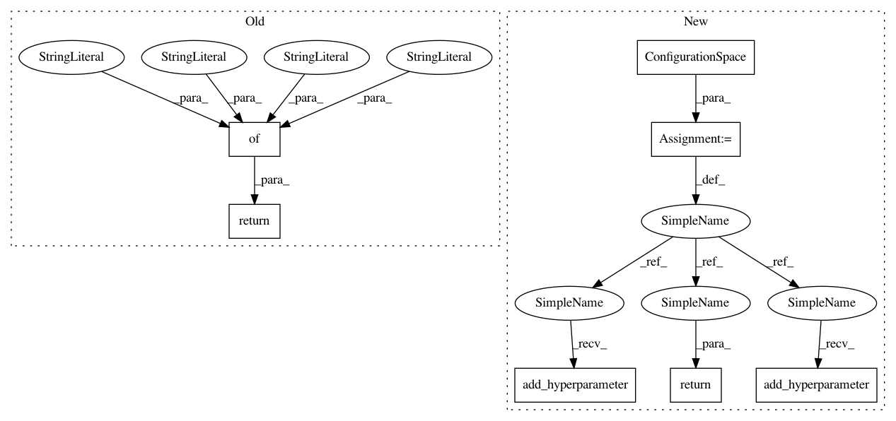

35a9d4d6148f5933db0e3dfda23d8f0acf0403ba,AutoSklearn/components/classification/libsvm_svc.py,LibSVM_SVC,get_hyperparameter_search_space,#,53
Before Change
def get_hyperparameter_search_space():
LOG2_C = hp_uniform("LOG2_C", -5, 15)
LOG2_gamma = hp_uniform("LOG2_gamma", -15, 3)
return {"name": "libsvm_svc", "LOG2_C": LOG2_C, "LOG2_gamma":
LOG2_gamma}
@staticmethod
def get_all_accepted_hyperparameter_names():
return (["LOG2_C", "C", "LOG2_gamma", "gamma"])
After Change
C = UniformFloatHyperparameter("C", 0.03125, 32768, log=True)
gamma = UniformFloatHyperparameter("gamma", 3.0517578125e-05, 8,
log=True)
cs = ConfigurationSpace()
cs.add_hyperparameter(C)
cs.add_hyperparameter(gamma)
return cs
@staticmethod
def get_all_accepted_hyperparameter_names():
return (["LOG2_C", "C", "LOG2_gamma", "gamma"])
In pattern: SUPERPATTERN
Frequency: 3
Non-data size: 7
Instances
Project Name: automl/auto-sklearn
Commit Name: 35a9d4d6148f5933db0e3dfda23d8f0acf0403ba
Time: 2014-11-14
Author: feurerm@informatik.uni-freiburg.de
File Name: AutoSklearn/components/classification/libsvm_svc.py
Class Name: LibSVM_SVC
Method Name: get_hyperparameter_search_space
Project Name: automl/auto-sklearn
Commit Name: 35a9d4d6148f5933db0e3dfda23d8f0acf0403ba
Time: 2014-11-14
Author: feurerm@informatik.uni-freiburg.de
File Name: AutoSklearn/components/classification/random_forest.py
Class Name: RandomForest
Method Name: get_hyperparameter_search_space
Project Name: automl/auto-sklearn
Commit Name: 35a9d4d6148f5933db0e3dfda23d8f0acf0403ba
Time: 2014-11-14
Author: feurerm@informatik.uni-freiburg.de
File Name: AutoSklearn/components/classification/liblinear.py
Class Name: LibLinear_SVC
Method Name: get_hyperparameter_search_space